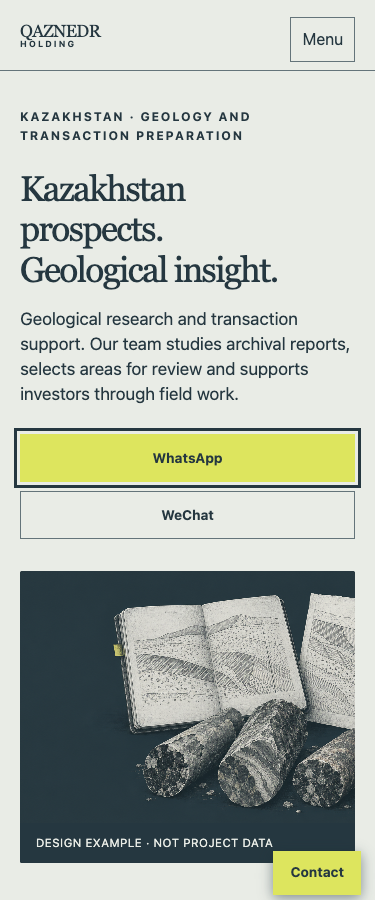
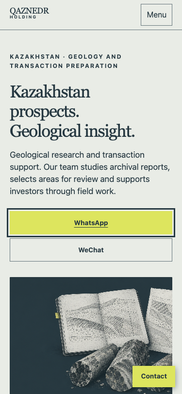
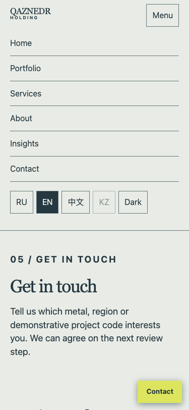
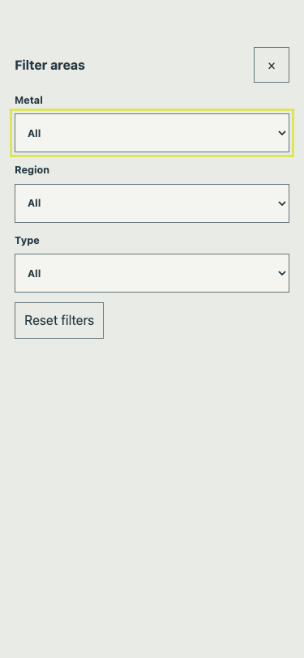
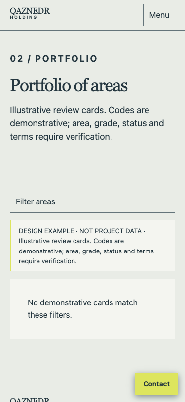
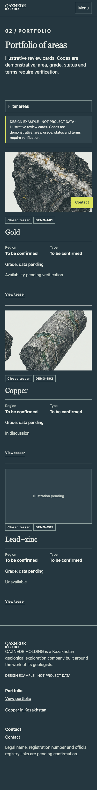
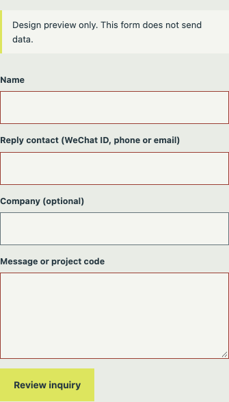
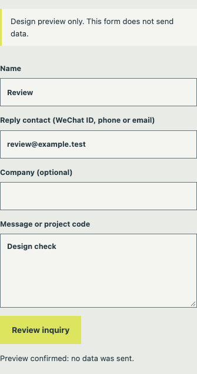

QAZNEDR HOLDING / DESIGN REVIEW
Captures of the live local preview at 375 px. They document behavior for implementation; final interaction details remain subject to owner review.
Primary action hover. Open page

Visible focus ring on the actual button.

Pressed visual state while pointer is down.

Menu opens from the header; Escape returns focus to its trigger.

Mobile overlay traps focus, supports Escape, and returns focus on close. Open portfolio

Metal and type mismatch yields an explicit empty state; Reset restores cards.

Three demo states: pending, in discussion, unavailable.

Required name, reply contact, and message use browser validation and visible invalid borders. Open contact

After valid input, the preview states clearly that no data was sent.